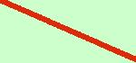
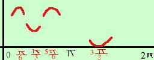

|
Determinare i punti di massimo e minimo per la seguente funzione in tutto l'intervallo di definizione: y = 2senx + cos2x L'intervallo di definizione e' tutto R ma essendo la funzione periodica di periodo 2 C.E. = (- Trovo la derivata prima e la pongo uguale a zero y' = 2cosx - 2sen2x sviluppando sen2x y' = 2cosx - 4senxcosx y' = 2cosx(1 - 2senx) Pongo la derivata uguale a zero 2cosx(1 - 2senx) = 0 la spezzo nelle due equazioni
Trovo i valori della y corrispondente sostituendo i vari valori al posto di x nell'equazione di partenza
nei punti A , B , C , D potrei avere un massimo, un minimo o un flesso orizzontale Per sapere se e' un massimo, un minimo o un flesso conviene studiare la derivata prima: Pongo la derivata prima maggiore di zero 2cosx(1 - 2senx) > 0 Equivale a dire che esplicitando i due fattori e ponendoli maggiori di zero 2cosx > 0 1 - 2senx > 0 la funzione sara' positiva dove i due fattori hanno segni concordi. se hai bisogno di aiuto per risolvere le disequazioni 2cosx > 0 0 + + + + + + + + + 1 - 2senx < 0 0 + + + + y ' + - + - + y M  m M m  allora possiamo dire A( B( C(5 D(3 |